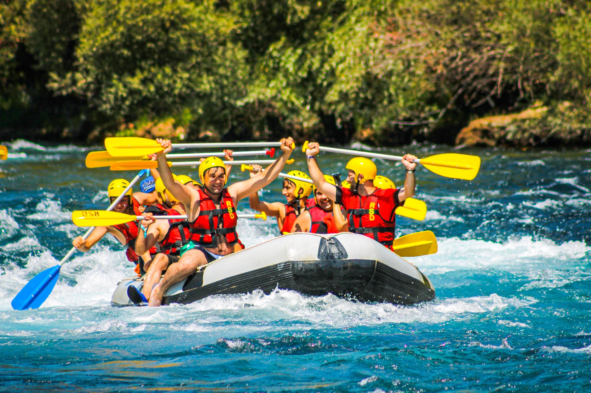

At WWR Rafting, our mission is to provide exciting, safe, and memorable river adventures for families, friends, and adventure seekers alike. We believe in connecting people with nature in fun and safe ways. Rafting with us means experiencing the thrill of navigating rapids, the beauty of untouched landscapes, and the camaraderie of fellow adventurers.